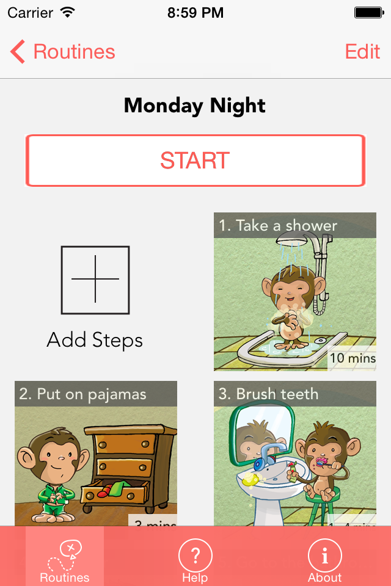
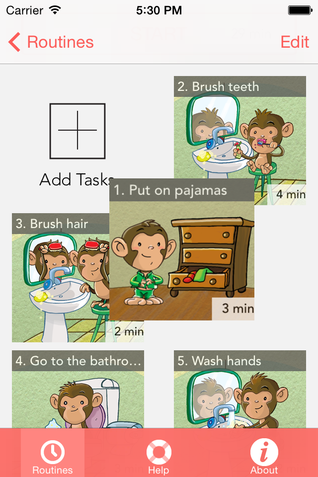
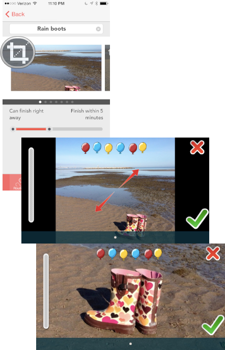

Create a routine for each night's schedule, for example a "Bath Night" routine or a "Quick to Bed" routine.
Work with your child to create a realistic routine that he/she can do on his/her own. Continue to adjust and tweak your routines as you get more experience with them.
A routine has one or more tasks such as brushing teeth or taking a bath. Use the built-in tasks or create new ones with your own pictures.
Task Timing
To rearrange the order of your tasks:
Press and hold on a task and then just drop it into its new spot.
Using Your Own Photos:
You can create a task from your device's photo collection or take a picture.
To re-center or zoom a photo, find the task and tap on its photo. Then pinch to arrange the photo just how you want it.
